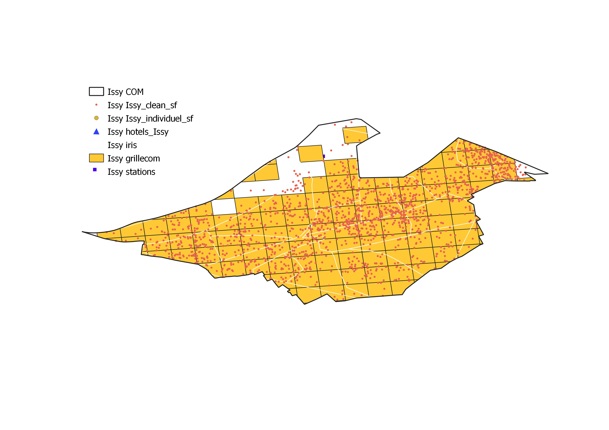

L’accès aux données AirDNA a fait l’objet d’une convention entre l’UMS RIATE et AirDNA dans le cadre de l’ANR WIsDHoM (Wealth inequalities and the dynamics of housing markets). Elles ne peuvent en conséquence pas être distribuées.
Les scripts ici proposés reposent sur des extractions réalisées à la commune par AirDNA. Cela signifie qu’ils peuvent être rejoués à l’identique à partir du moment où ces données sont mises à disposition par AirDNA, et que le modèle d’extraction de données d’AirDNA reste inchangé.
L’extraction porte sur les limites communales de Bagneux, Issy-les-Moulineaux et Pantin.
Juillet 2021 (dernière version)
Septembre 2021.
“Laurian Louis, 2021, Mise en oeuvre d’une chaîne de traitement de données AirDNA : Étudier l’activité de la plateforme Airbnb dans 3 communes franciliennes, UMS RIATE, ANR WIsDHoM, mémoire de stage de master Géoprisme”.
Ce travail porte sur l’emprise géographique de trois communes franciliennes : Bagneux, Issy-les-Moulineaux et Pantin.
Les variables des tableaux de données distribués par AirDNA. Pour un descriptif détaillé de ce contenu, se rendre dans la partie de préparation des données.
Les tableaux de données mensuel contiennent les bilans mensuels des scraping. Cette base de données indique les mois durant lesquels chaque logement a été scrapé ainsi que les bilans en terme de fréquentation et de revenus engendrés durant le mois scrapé, de janvier 2015 à décembre 2020.
| Variable | Type | Description |
|---|---|---|
| Zipcode | logical | Code postal de la ville du logement |
| Neighborhood | logical | Quartier où se situe le logement |
| Metropolitan Statistical Area | logical | Aire statistique métropolitaine dans laquelle se trouve le logement (seulement aux USA) |
| HomeAway Property ID | logical | Identifiant unique de chaque propriété Homeaway |
| HomeAway Property Manager | logical | Identifiant unique de chaque hôte Homeaway |
| ADR (Native) | numeric | Revenus engendré par l’hôte pour une réservation, dans la devise choisie par l’hôte : Revenus totaux / Nombre de nuitées réservées |
| ADR (USD) | numeric | Revenus engendré par l’hôte pour une réservation, en dollars : Revenus totaux / Nombre de nuitées réservées |
| Revenue (USD) | numeric | Revenus totaux engendrés pendant la période de récolte en dollars |
| Occupancy Rate | numeric | Taux de fréquentation : Nombre de jours réservés / (nombre de nuitées réservés + nombre de nuitées disponibles) pendant le mois |
| Revenue (Native) | numeric | Revenus totaux engendrés pendant la période de récolte dans la devise choisie par l’hôte |
| Currency Native | character | Devise choisie par l’hôte |
| Airbnb Property ID | numeric | Identifiant unique de chaque propriété Airbnb |
| Airbnb Host ID | numeric | Identifiant unique de chaque hôte Airbnb |
| Property ID | character | Identifiant unique de chaque propriété |
| Property Type | character | Type de logement (choisi par l’hôte) |
| Listing Type | character | Type de logement (selon modalités Airbnb) |
| Bedrooms | numeric | Nombre de chambres |
| Reporting Month | Date | Mois pendant lequel les données ont été récoltées |
| Number of Reservations | numeric | Nombre de réservations durant le mois |
| Reservation Days | numeric | Nombre de nuitées réservées durant le mois |
| Available Days | numeric | Nombre de jours classifiés comme disponibles, mais non réservés |
| Blocked Days | numeric | Nombre de jours classifiés comme bloqués à la réservation. |
| Country | character | Pays dans lequel se situe le logement |
| State | character | Région dans laquelle se situe le logement |
| City | character | Ville dans laquelle se situe le logement |
| Latitude | numeric | Latitude du logement |
| Longitude | numeric | Longitude du logement |
| Active | logical | TRUE si le logement a été proposé ou réservé au moins un jour durant la période de récolte |
| Scraped During Month | logical | TRUE si le logement a été scrapé pendant le mois |
La base de données individuelle est plus détaillée et est individuelle à chaque logement Airbnb. En effet, on a 70 variables décrivant la totalité des logements présents dans la commune depuis le début de leur mise en ligne sur le marché : chaque ligne représente un logement actif entre 2015 et 2020. On a donc pour certains d’entre eux des logements qui ne sont plus actifs voire qui ont été retirés du marché.
| Variable | Type | Description |
|---|---|---|
| Zipcode | logical | Code postal de la ville du logement |
| Neighborhood | logical | Quartier où se situe le logement |
| Metropolitan Statistical Area | logical | Aire statistique métropolitaine dans laquelle se trouve le logement (seulement aux USA) |
| HomeAway Location Type | logical | Type de logement HomeAway |
| Airbnb Property Plus | logical | TRUE : le logement est considéré par Airbnb comme étant « exceptionnel » et vérifié par un contrôle qualité |
| Airbnb Home Collection | logical | TRUE : le logement fait partie d’un ensemble de logements sélectionnés par Airbnb pour un type spécifique de voyage |
| HomeAway Property Manager ID | logical | Identifiant unique de chaque hôte Homeaway |
| HomeAway Premier Partner | logical | TRUE si l’hôte est Premier Partner chez HomeAway |
| Integrated Property Manager | logical | TRUE : l’hôte vit dans le logement qu’il loue |
| License | character | Numéro de licence de l’hôte |
| HomeAway Property ID | logical | Identifiant unique de chaque propriété Homeaway |
| Extra People Fee (Native) | numeric | Frais pour un voyageur supplémentaire dans la devise choisie par l’hôte |
| Extra People Fee (USD) | numeric | Frais pour un voyageur supplémentaire en dollars |
| Average Daily Rate (Native) | numeric | Revenus engendré par l’hôte pour une réservation, dans la devise choisie par l’hôte sur l’année passée : Revenus totaux / Nombre de nuitées réservées |
| Average Daily Rate (USD) | numeric | Revenus engendré par l’hôte pour une réservation, en dollars sur l’année passée : Revenus totaux / Nombre de nuitées réservées |
| Occupancy Rate LTM | numeric | Taux de fréquentation : Nombre de jours réservés / (nombre de nuitées réservés + nombre de nuitées disponibles) Les calculs ne prennent pas en compte les jours bloqués et les mois sans réservation |
| Count Reservation Days LTM | numeric | Nombre de jours classés comme réservés durant les 12 derniers mois |
| Count Available Days LTM | numeric | Nombre de jours classés comme disponibles, c’est à dire proposés à la location mais non réservé durant les 12 derniers mois |
| Count Blocked Days LTM | numeric | Nombre de jours classés comme bloqués durant les 12 derniers mois |
| Security Deposit (Native) | numeric | Caution choisie par l’hôte dans sa devise |
| Security Deposit (USD) | numeric | Caution choisie par l’hôte en dollars |
| Cleaning Fee (Native) | numeric | Frais de ménage par réservation dans la devise choisie par l’hôte |
| Cleaning Fee (USD) | numeric | Frais de ménage par réservation en dollars |
| Airbnb Response Time (Text) | character | Temps de réponse de l’hôte |
| Airbnb Value Rating | numeric | Note sur 10 attribuée par le visiteur au rapport qualité/prix |
| Airbnb Communication Rating | numeric | Note sur 10 attribuée par le visiteur à la communication de l’hôte |
| Airbnb Accuracy Rating | numeric | Note sur 10 attribuée par le visiteur à l’exactitude de l’annonce |
| Airbnb Cleanliness Rating | numeric | Note sur 10 attribuée par le visiteur à la propreté du logement |
| Airbnb Checkin Rating | numeric | Note sur 10 attribuée par le visiteur à l’accueil de l’hôte |
| Airbnb Location Rating | numeric | Note sur 10 attribuée par le visiteur à la localisation du logement |
| Overall Rating | numeric | Note du visiteur sur une échelle de 0 à 100 |
| Published Monthly Rate (USD) | numeric | Prix mensuel choisi par l’hôte |
| Published Weekly Rate (USD) | numeric | Prix hebdomadaire choisi par l’hôte |
| Check-in-Time | character | Heure du check-in |
| Checkout Time | character | Heure du checkout |
| Response Rate | numeric | Pourcentage de réponse de l’hôte dans les 24h |
| Calendar Last Updated | Date | Dernier jour durant lequel l’hôte a mis à jour son calendrier |
| Listing Images | character | Photos de l’annonce |
| Currency Native | character | Devise choisie par l’hôte |
| Airbnb Superhost | logical | TRUE si l’hôte est Superhost |
| Published Nightly Rate (USD) | numeric | Prix choisi par l’hôte pour une nuitée |
| Created Date | Date | Date durant laquelle a été mis en ligne le logement |
| Annual Revenue LTM (Native) | numeric | Revenus totaux engendrés par l’hôte sur l’année passée, dans la devise choisie par l’hôte |
| Pets Allowed | logical | TRUE : les animaux sont autorisés au sein du logement |
| Airbnb Property ID | numeric | Identifiant unique de chaque propriété Airbnb |
| Airbnb Host ID | numeric | Identifiant unique de chaque hôte Airbnb |
| Cancellation Policy | character | Mesures d’annulation |
| Minimum Stay | numeric | Durée minimale du séjour |
| Number of Photos | numeric | Nombre de photos présentes sur l’annonce |
| Amenities | character | Aménités présentes au sein du logement |
| Property ID | character | Identifiant unique de chaque propriété |
| Listing Title | character | Titre de l’annonce |
| Property Type | character | Type de logement (choisi par l’hôte) |
| Listing Type | character | Type de logement (selon modalités Airbnb) |
| Last Scraped Date | Date | Dernier jour où le logement a été scrapé. Chaque logement est scrapé tous les 3 jours |
| Country | character | Pays dans lequel se situe le logement |
| State | character | Région dans laquelle se situe le logement |
| City | character | Ville dans laquelle se situe le logement |
| Annual Revenue LTM (USD) | numeric | Revenus totaux engendrés par l’hôte sur l’année passée, en dollars |
| Number of Bookings LTM | numeric | Nombre de réservations lors des 12 derniers mois |
| Number of Reviews | numeric | Nombre total de commentaires sur l’annonce |
| Bedrooms | numeric | Nombre de chambres |
| Bathrooms | numeric | Nombre de salles de bain |
| Max Guests | numeric | Capacité d’accueil en nombre de voyageurs |
| Instantbook Enabled | logical | TRUE : l’annonce peut être réservée sans devoir communiquer avec l’hôte |
| Listing URL | character | Lien URL vers l’annonce |
| Listing Main Image URL | character | Lien URL vers la photo principale de l’annonce |
| Latitude | numeric | Latitude du logement |
| Longitude | numeric | Longitude du logement |
| Exact Location | logical | TRUE : l’annonce est à l’endroit précis où elle est localisée |
La phase de préparation et nettoyage des données mobilises les données brutes et restitue des données consolidées, utilisées dans les analyses.
Indicateurs utiles pour rejouer les analyses (synthèse et comparaisons de communes à communes). Un fichier par commune.
| Variable | Tableau | Méthodologie | Description |
|---|---|---|---|
| activite | Individuel | « Jamais proposé » si le logement n’a jamais été disponible ni réservé, « Proposé, Jamais réservé » si le logement a été disponible mais non réservé, « Réservé » si le logement a été réservé | Typologie d’un logement selon son activité : Jamais proposé, Proposé mais jamais réservé, Réservé au moins une fois |
| anciennete | Individuel | Date du dernier scraping – date de mise en ligne du logement (fin – debut) | Nombre de mois depuis la mise en ligne de l’annonce sur le site Airbnb |
| Freq | Individuel | fonction table() pour compter la fréquence d’occurence de chaque identifiant d’hôte | Dénombre le nombre de logements détenus par un hôte |
| licence | Individuel | TRUE si observation dans la variable License, FALSE si NA | TRUE si l’hôte possède une licence, FALSE s’il n’en possède pas |
| multi | Individuel | TRUE si Freq > 1, FALSE si Freq == 1 | TRUE si l’hôte possède plusieurs logements dans la commune, FALSE s’il n’en possède qu’un |
| nb_bloques_tot | Individuel | Somme de toutes les nuitées bloquées via le tableau mensuel_clean | Nombre de nuitées bloquées depuis la mise en ligne du logement |
| nb_dispo_tot | Individuel | Somme de toutes les nuitées disponibles via le tableau mensuel_clean | Nombre de nuitées disponibles depuis la mise en ligne du logement |
| nb_nuitees_tot | Individuel | Somme de toutes les nuitées réservées via le tableau mensuel_clean | Nombre de nuitées réservées depuis la mise en ligne du logement |
| nb_resa_tot | Individuel | Somme du nombre de réservations via le tableau mensuel_clean | Nombre de réservations depuis la mise en ligne du logement |
| actif | Mensuel | TRUE si nb_dispo > 0, FALSE si nb_dispo == 0 | TRUE si le logement est considéré comma actif sur le mois, FALSE si non |
| activite | Mensuel | « Mois non disponible » si le logement n’a jamais été disponible ni réservé durant le mois scrapé, « Mois disponibles mais sans réservation » si le logement a été disponible mais non réservé durant le mois scrapé, « Mois avec réservation » si le logement a été réservé durant le mois scrapé | Typologie d’un logement selon son activité mensuelle :Mois non disponibles, Mois disponibles mais sans réservation, Mois avec réservation |
| day | Mensuel | Extraction du jour de la mensualité correspondante (colonne mois) | Jour durant lequel le logement a été scrapé |
| duree | Mensuel | Nombre de nuitées réservées / Nombre de réservation | Durée moyenne des séjours |
| month | Mensuel | Extraction du mois de la mensualité correspondante (colonne mois) | Mois durant lequel le logement a été scrapé |
| year | Mensuel | Extraction de l’année de la mensualité correspondante (colonne mois) | Année durant laquelle le logement a été scrapé |
| tauxfreq | Individuel & Mensuel | Nombre de nuitées réservées / Nombre de nuitées disponibles | Taux de fréquentation du logement |
Un geopackage par commune qui contient les couches géographiques suivantes :

Packages R mobilisés pour préparer les données et construire les analyses.
sessionInfo()## R version 4.1.0 (2021-05-18)
## Platform: x86_64-w64-mingw32/x64 (64-bit)
## Running under: Windows 10 x64 (build 19043)
##
## Matrix products: default
##
## locale:
## [1] LC_COLLATE=French_France.1252 LC_CTYPE=French_France.1252
## [3] LC_MONETARY=French_France.1252 LC_NUMERIC=C
## [5] LC_TIME=French_France.1252
##
## attached base packages:
## [1] stats graphics grDevices utils datasets methods base
##
## other attached packages:
## [1] cartography_3.0.0 RColorBrewer_1.1-2 leaflet_2.0.4.1 sf_1.0-2
## [5] ggplot2_3.3.5 tidyr_1.1.3 kableExtra_1.3.4 dplyr_1.0.7
## [9] readxl_1.3.1 readr_2.0.1
##
## loaded via a namespace (and not attached):
## [1] Rcpp_1.0.7 lattice_0.20-44 svglite_2.0.0 class_7.3-19
## [5] digest_0.6.27 utf8_1.2.1 R6_2.5.0 cellranger_1.1.0
## [9] evaluate_0.14 e1071_1.7-7 httr_1.4.2 highr_0.9
## [13] pillar_1.6.1 rlang_0.4.11 rstudioapi_0.13 rmarkdown_2.9
## [17] webshot_0.5.2 stringr_1.4.0 htmlwidgets_1.5.3 bit_4.0.4
## [21] munsell_0.5.0 proxy_0.4-26 compiler_4.1.0 xfun_0.24
## [25] pkgconfig_2.0.3 systemfonts_1.0.2 rgeos_0.5-5 htmltools_0.5.1.1
## [29] tidyselect_1.1.1 tibble_3.1.2 fansi_0.5.0 viridisLite_0.4.0
## [33] crayon_1.4.1 tzdb_0.1.2 withr_2.4.2 grid_4.1.0
## [37] gtable_0.3.0 lifecycle_1.0.0 DBI_1.1.1 magrittr_2.0.1
## [41] units_0.7-2 scales_1.1.1 KernSmooth_2.23-20 cli_2.5.0
## [45] stringi_1.6.1 vroom_1.5.4 sp_1.4-5 xml2_1.3.2
## [49] ellipsis_0.3.2 generics_0.1.0 vctrs_0.3.8 tools_4.1.0
## [53] bit64_4.0.5 glue_1.4.2 purrr_0.3.4 hms_1.1.0
## [57] crosstalk_1.1.1 parallel_4.1.0 yaml_2.2.1 colorspace_2.0-1
## [61] classInt_0.4-3 rvest_1.0.0 knitr_1.33